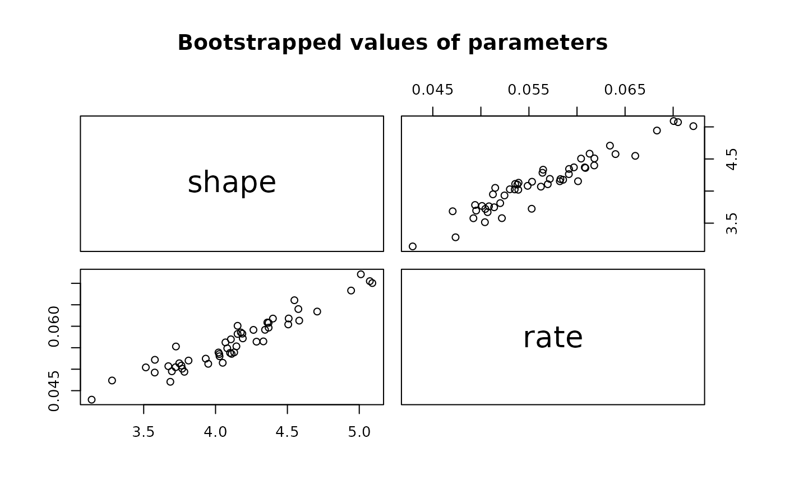
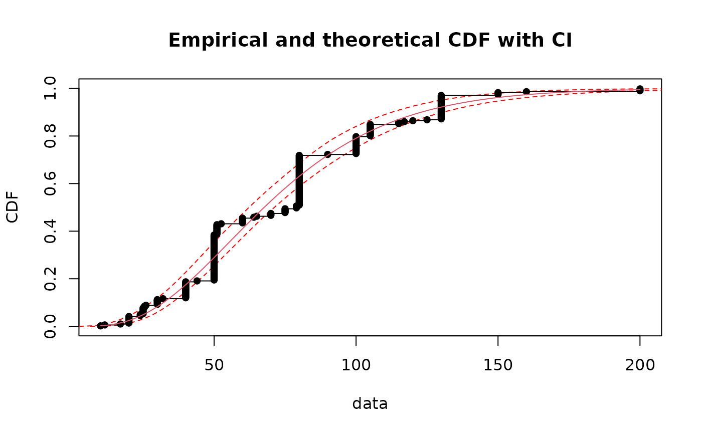
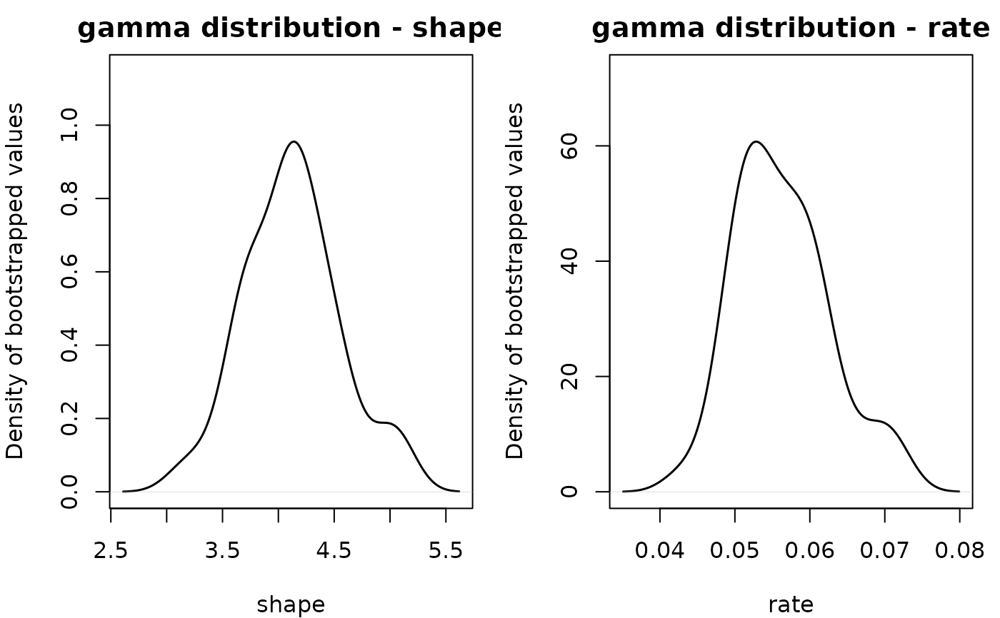
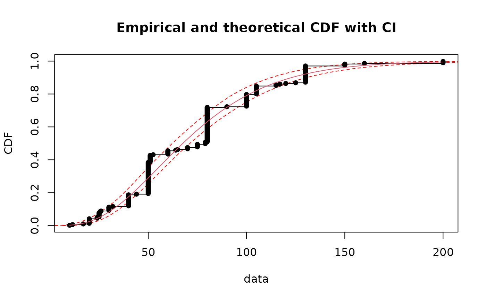
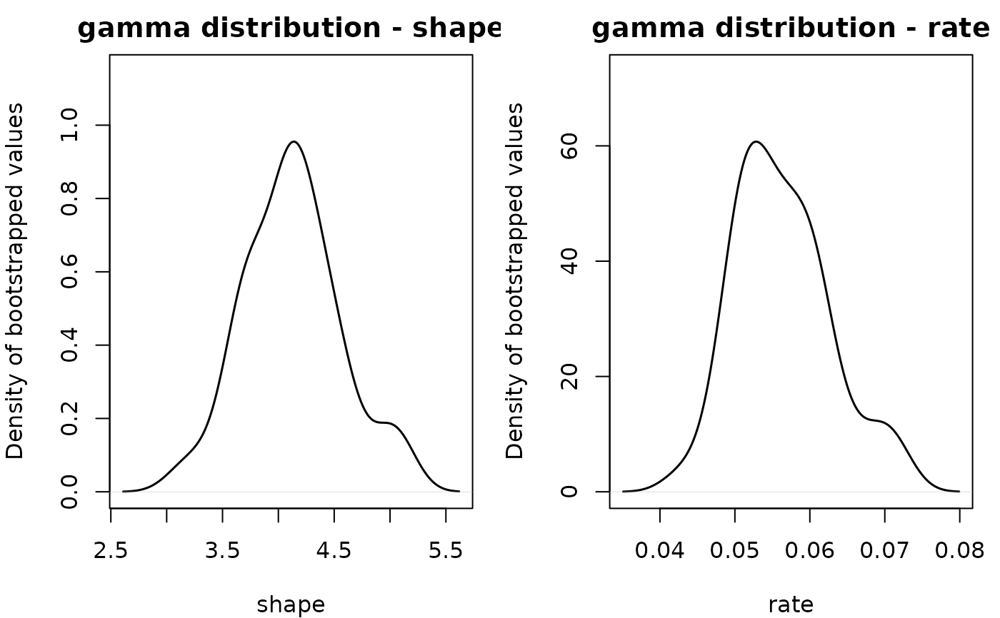

Bootstrap simulation of uncertainty for non-censored data
bootdist.RdUses parametric or nonparametric bootstrap resampling in order to simulate uncertainty in the parameters of the distribution fitted to non-censored data.
Usage
bootdist(f, bootmethod = "param", niter = 1001, silent = TRUE,
parallel = c("no", "snow", "multicore"), ncpus)
# S3 method for class 'bootdist'
print(x, ...)
# S3 method for class 'bootdist'
plot(x, main = "Bootstrapped values of parameters", enhance = FALSE,
trueval = NULL, rampcol = NULL, nbgrid = 100, nbcol = 100, ...)
# S3 method for class 'bootdist'
summary(object, ...)
# S3 method for class 'bootdist'
density(..., bw = nrd0, adjust = 1, kernel = "gaussian")
# S3 method for class 'density.bootdist'
plot(x, mar=c(4,4,2,1), lty=NULL, col=NULL, lwd=NULL, ...)
# S3 method for class 'density.bootdist'
print(x, ...)Arguments
- f
An object of class
"fitdist", output of thefitdistfunction.- bootmethod
A character string coding for the type of resampling :
"param"for a parametric resampling and"nonparam"for a nonparametric resampling of data.- niter
The number of samples drawn by bootstrap.
- silent
A logical to remove or show warnings and errors when bootstraping.
- parallel
The type of parallel operation to be used,
"snow"or"multicore"(the second one not being available on Windows), or"no"if no parallel operation.- ncpus
Number of processes to be used in parallel operation : typically one would fix it to the number of available CPUs.
- x
An object of class
"bootdist"or"density.bootdist".- object
An object of class
"bootdist".- main
an overall title for the plot: see
title, default to"Bootstrapped values of parameters".- enhance
a logical to get an enhanced plot.
- trueval
when relevant, a numeric vector with the true value of parameters (for backfitting purposes).
- rampcol
colors to interpolate; must be a valid argument to
colorRampPalette().- nbgrid
Number of grid points in each direction. Can be scalar or a length-2 integer vector.
- nbcol
An integer argument, the required number of colors
- ...
Further arguments to be passed to generic methods or
"bootdist"objects fordensity.- bw, adjust, kernel
resp. the smoothing bandwidth, the scaling factor, the kernel used, see
density.- mar
A numerical vector of the form
c(bottom, left, top, right), seepar.- lty, col, lwd
resp. the line type, the color, the line width, see
par.
Details
Samples are drawn by parametric bootstrap (resampling from the distribution fitted by
fitdist) or nonparametric bootstrap (resampling with replacement from the
data set). On each bootstrap sample the function
mledist (or mmedist, qmedist, mgedist
according to the component f$method of the object of class "fitdist") is
used to estimate bootstrapped values of parameters. When that function fails
to converge, NA values are returned. Medians and 2.5 and 97.5 percentiles are
computed by removing NA values.
The medians and the 95 percent confidence intervals of parameters (2.5 and 97.5
percentiles) are printed in the summary.
If inferior to the whole number of iterations, the number of iterations for which
the function converges is also printed in the summary.
By default (when enhance=FALSE), the plot of an object of class
"bootdist" consists in a scatterplot or a matrix
of scatterplots of the bootstrapped values of parameters.
It uses the function stripchart when the fitted distribution
is characterized by only one parameter, the function plot when there
are two paramters and the function pairs in other cases.
In these last cases, it provides a representation of the joint uncertainty distribution
of the fitted parameters.
When enhance=TRUE, a personalized plot version of pairs is used where
upper graphs are scatterplots and lower graphs are heatmap image using image
based on a kernel based estimator for the 2D density function (using kde2d from
MASS package).
Arguments rampcol, nbgrid, nbcol can be used to customize the plots.
Defautls values are rampcol=c("green", "yellow", "orange", "red"), nbcol=100
(see colorRampPalette()), nbgrid=100 (see kde2d).
In addition, when fitting parameters on simulated datasets for backtesting purposes, an
additional argument trueval can be used to plot a cross at the true value.
It is possible to accelerate the bootstrap using parallelization. We recommend you to
use parallel = "multicore", or parallel = "snow" if you work on Windows,
and to fix ncpus to the number of available processors.
density computes the empirical density of bootdist objects using the
density function (with Gaussian kernel by default).
It returns an object of class density.bootdist for which print
and plot methods are provided.
Value
bootdist returns an object of class "bootdist", a list with 6 components,
- estim
a data frame containing the bootstrapped values of parameters.
- converg
a vector containing the codes for convergence obtained if an iterative method is used to estimate parameters on each bootstraped data set (and 0 if a closed formula is used).
- method
A character string coding for the type of resampling :
"param"for a parametric resampling and"nonparam"for a nonparametric resampling.- nbboot
The number of samples drawn by bootstrap.
- CI
bootstrap medians and 95 percent confidence percentile intervals of parameters.
- fitpart
The object of class
"fitdist"on which the bootstrap procedure was applied.
Generic functions:
printThe print of a
"bootdist"object shows the bootstrap parameter estimates. If inferior to the whole number of bootstrap iterations, the number of iterations for which the estimation converges is also printed.summaryThe summary provides the median and 2.5 and 97.5 percentiles of each parameter. If inferior to the whole number of bootstrap iterations, the number of iterations for which the estimation converges is also printed in the summary.
plotThe plot shows the bootstrap estimates with
stripchartfunction for univariate parameters andplotfunction for multivariate parameters.densityThe density computes empirical densities and return an object of class
density.bootdist.
See also
See fitdistrplus for an overview of the package.
fitdist, mledist, qmedist, mmedist,
mgedist,
quantile.bootdist for another generic function to calculate
quantiles from the fitted distribution and its bootstrap results
and CIcdfplot for adding confidence intervals on quantiles
to a CDF plot of the fitted distribution.
Please visit the Frequently Asked Questions.
References
Cullen AC and Frey HC (1999), Probabilistic techniques in exposure assessment. Plenum Press, USA, pp. 181-241.
Delignette-Muller ML and Dutang C (2015), fitdistrplus: An R Package for Fitting Distributions. Journal of Statistical Software, 64(4), 1-34, doi:10.18637/jss.v064.i04 .
Examples
# We choose a low number of bootstrap replicates in order to satisfy CRAN running times
# constraint.
# For practical applications, we recommend to use at least niter=501 or niter=1001.
# (1) Fit of a gamma distribution to serving size data
# using default method (maximum likelihood estimation)
# followed by parametric bootstrap
#
data(groundbeef)
x1 <- groundbeef$serving
f1 <- fitdist(x1, "gamma")
b1 <- bootdist(f1, niter=51)
print(b1)
#> Parameter values obtained with parametric bootstrap
#> shape rate
#> 1 4.081548 0.05486224
#> 2 4.189530 0.05717646
#> 3 4.186561 0.05827691
#> 4 4.153367 0.06010613
#> 5 5.011150 0.07210224
#> 6 4.332796 0.05647597
plot(b1)

plot(b1, enhance=TRUE)
 summary(b1)
#> Parametric bootstrap medians and 95% percentile CI
#> Median 2.5% 97.5%
#> shape 4.11174269 3.33866627 5.05787399
#> rate 0.05532224 0.04714105 0.07039183
quantile(b1)
#> (original) estimated quantiles for each specified probability (non-censored data)
#> p=0.1 p=0.2 p=0.3 p=0.4 p=0.5 p=0.6 p=0.7
#> estimate 32.16733 42.32692 50.91831 59.15298 67.62801 76.88308 87.67764
#> p=0.8 p=0.9
#> estimate 101.5208 122.9543
#> Median of bootstrap estimates
#> p=0.1 p=0.2 p=0.3 p=0.4 p=0.5 p=0.6 p=0.7
#> estimate 32.65191 42.77486 51.16946 59.25783 67.54032 76.42359 87.07212
#> p=0.8 p=0.9
#> estimate 100.8478 121.5045
#>
#> two-sided 95 % CI of each quantile
#> p=0.1 p=0.2 p=0.3 p=0.4 p=0.5 p=0.6 p=0.7 p=0.8
#> 2.5 % 27.78104 37.70176 45.79023 53.77101 62.30589 71.51079 81.58248 93.57508
#> 97.5 % 35.20921 45.25381 53.86981 62.27518 71.23506 81.28761 93.12187 107.81119
#> p=0.9
#> 2.5 % 112.6206
#> 97.5 % 130.6195
CIcdfplot(b1, CI.output = "quantile")

density(b1)
#>
#> Bootstrap values for: gamma for 1 object(s) with 51 bootstrap values (original sample size 254).
plot(density(b1))

# (2) non parametric bootstrap on the same fit
#
b1b <- bootdist(f1, bootmethod="nonparam", niter=51)
summary(b1b)
#> Nonparametric bootstrap medians and 95% percentile CI
#> Median 2.5% 97.5%
#> shape 4.07620083 3.45714119 4.70574875
#> rate 0.05554833 0.04814463 0.06355013
quantile(b1b)
#> (original) estimated quantiles for each specified probability (non-censored data)
#> p=0.1 p=0.2 p=0.3 p=0.4 p=0.5 p=0.6 p=0.7
#> estimate 32.16733 42.32692 50.91831 59.15298 67.62801 76.88308 87.67764
#> p=0.8 p=0.9
#> estimate 101.5208 122.9543
#> Median of bootstrap estimates
#> p=0.1 p=0.2 p=0.3 p=0.4 p=0.5 p=0.6 p=0.7
#> estimate 32.15396 42.37584 50.96144 58.92657 67.42331 76.79944 87.14609
#> p=0.8 p=0.9
#> estimate 100.2863 121.457
#>
#> two-sided 95 % CI of each quantile
#> p=0.1 p=0.2 p=0.3 p=0.4 p=0.5 p=0.6 p=0.7 p=0.8
#> 2.5 % 28.98195 38.64795 47.20053 55.45966 63.67865 72.26101 82.41641 95.36231
#> 97.5 % 36.61241 46.92714 55.51564 63.66138 71.97465 80.97711 91.55170 105.36847
#> p=0.9
#> 2.5 % 115.1418
#> 97.5 % 127.5526
# (3) Fit of a normal distribution on acute toxicity values of endosulfan in log10 for
# nonarthropod invertebrates, using maximum likelihood estimation
# to estimate what is called a species sensitivity distribution
# (SSD) in ecotoxicology, followed by estimation of the 5 percent quantile value of
# the fitted distribution, what is called the 5 percent hazardous concentration (HC5)
# in ecotoxicology, with its two-sided 95 percent confidence interval calculated by
# parametric bootstrap
#
data(endosulfan)
ATV <- subset(endosulfan, group == "NonArthroInvert")$ATV
log10ATV <- log10(subset(endosulfan, group == "NonArthroInvert")$ATV)
fln <- fitdist(log10ATV, "norm")
bln <- bootdist(fln, bootmethod = "param", niter=51)
quantile(bln, probs = c(0.05, 0.1, 0.2))
#> (original) estimated quantiles for each specified probability (non-censored data)
#> p=0.05 p=0.1 p=0.2
#> estimate 1.744227 2.080093 2.4868
#> Median of bootstrap estimates
#> p=0.05 p=0.1 p=0.2
#> estimate 1.927721 2.24123 2.570288
#>
#> two-sided 95 % CI of each quantile
#> p=0.05 p=0.1 p=0.2
#> 2.5 % 0.9768477 1.397718 1.937638
#> 97.5 % 2.4716633 2.703313 2.983822
# (4) comparison of sequential and parallel versions of bootstrap
# to be tried with a greater number of iterations (1001 or more)
#
# \donttest{
niter <- 1001
data(groundbeef)
x1 <- groundbeef$serving
f1 <- fitdist(x1, "gamma")
# sequential version
ptm <- proc.time()
summary(bootdist(f1, niter = niter))
#> Parametric bootstrap medians and 95% percentile CI
#> Median 2.5% 97.5%
#> shape 4.02419491 3.47031893 4.73319322
#> rate 0.05457466 0.04623237 0.06478125
proc.time() - ptm
#> user system elapsed
#> 3.997 0.000 3.997
# parallel version using snow
require("parallel")
#> Loading required package: parallel
ptm <- proc.time()
summary(bootdist(f1, niter = niter, parallel = "snow", ncpus = 2))
#> Parametric bootstrap medians and 95% percentile CI
#> Median 2.5% 97.5%
#> shape 4.02295676 3.44821335 4.75696688
#> rate 0.05449994 0.04620417 0.06557893
proc.time() - ptm
#> user system elapsed
#> 0.039 0.001 3.708
# parallel version using multicore (not available on Windows)
ptm <- proc.time()
summary(bootdist(f1, niter = niter, parallel = "multicore", ncpus = 2))
#> Parametric bootstrap medians and 95% percentile CI
#> Median 2.5% 97.5%
#> shape 4.04594150 3.47586081 4.74328466
#> rate 0.05490323 0.04682605 0.06512702
proc.time() - ptm
#> user system elapsed
#> 4.136 0.254 2.214
# }
summary(b1)
#> Parametric bootstrap medians and 95% percentile CI
#> Median 2.5% 97.5%
#> shape 4.11174269 3.33866627 5.05787399
#> rate 0.05532224 0.04714105 0.07039183
quantile(b1)
#> (original) estimated quantiles for each specified probability (non-censored data)
#> p=0.1 p=0.2 p=0.3 p=0.4 p=0.5 p=0.6 p=0.7
#> estimate 32.16733 42.32692 50.91831 59.15298 67.62801 76.88308 87.67764
#> p=0.8 p=0.9
#> estimate 101.5208 122.9543
#> Median of bootstrap estimates
#> p=0.1 p=0.2 p=0.3 p=0.4 p=0.5 p=0.6 p=0.7
#> estimate 32.65191 42.77486 51.16946 59.25783 67.54032 76.42359 87.07212
#> p=0.8 p=0.9
#> estimate 100.8478 121.5045
#>
#> two-sided 95 % CI of each quantile
#> p=0.1 p=0.2 p=0.3 p=0.4 p=0.5 p=0.6 p=0.7 p=0.8
#> 2.5 % 27.78104 37.70176 45.79023 53.77101 62.30589 71.51079 81.58248 93.57508
#> 97.5 % 35.20921 45.25381 53.86981 62.27518 71.23506 81.28761 93.12187 107.81119
#> p=0.9
#> 2.5 % 112.6206
#> 97.5 % 130.6195
CIcdfplot(b1, CI.output = "quantile")

density(b1)
#>
#> Bootstrap values for: gamma for 1 object(s) with 51 bootstrap values (original sample size 254).
plot(density(b1))

# (2) non parametric bootstrap on the same fit
#
b1b <- bootdist(f1, bootmethod="nonparam", niter=51)
summary(b1b)
#> Nonparametric bootstrap medians and 95% percentile CI
#> Median 2.5% 97.5%
#> shape 4.07620083 3.45714119 4.70574875
#> rate 0.05554833 0.04814463 0.06355013
quantile(b1b)
#> (original) estimated quantiles for each specified probability (non-censored data)
#> p=0.1 p=0.2 p=0.3 p=0.4 p=0.5 p=0.6 p=0.7
#> estimate 32.16733 42.32692 50.91831 59.15298 67.62801 76.88308 87.67764
#> p=0.8 p=0.9
#> estimate 101.5208 122.9543
#> Median of bootstrap estimates
#> p=0.1 p=0.2 p=0.3 p=0.4 p=0.5 p=0.6 p=0.7
#> estimate 32.15396 42.37584 50.96144 58.92657 67.42331 76.79944 87.14609
#> p=0.8 p=0.9
#> estimate 100.2863 121.457
#>
#> two-sided 95 % CI of each quantile
#> p=0.1 p=0.2 p=0.3 p=0.4 p=0.5 p=0.6 p=0.7 p=0.8
#> 2.5 % 28.98195 38.64795 47.20053 55.45966 63.67865 72.26101 82.41641 95.36231
#> 97.5 % 36.61241 46.92714 55.51564 63.66138 71.97465 80.97711 91.55170 105.36847
#> p=0.9
#> 2.5 % 115.1418
#> 97.5 % 127.5526
# (3) Fit of a normal distribution on acute toxicity values of endosulfan in log10 for
# nonarthropod invertebrates, using maximum likelihood estimation
# to estimate what is called a species sensitivity distribution
# (SSD) in ecotoxicology, followed by estimation of the 5 percent quantile value of
# the fitted distribution, what is called the 5 percent hazardous concentration (HC5)
# in ecotoxicology, with its two-sided 95 percent confidence interval calculated by
# parametric bootstrap
#
data(endosulfan)
ATV <- subset(endosulfan, group == "NonArthroInvert")$ATV
log10ATV <- log10(subset(endosulfan, group == "NonArthroInvert")$ATV)
fln <- fitdist(log10ATV, "norm")
bln <- bootdist(fln, bootmethod = "param", niter=51)
quantile(bln, probs = c(0.05, 0.1, 0.2))
#> (original) estimated quantiles for each specified probability (non-censored data)
#> p=0.05 p=0.1 p=0.2
#> estimate 1.744227 2.080093 2.4868
#> Median of bootstrap estimates
#> p=0.05 p=0.1 p=0.2
#> estimate 1.927721 2.24123 2.570288
#>
#> two-sided 95 % CI of each quantile
#> p=0.05 p=0.1 p=0.2
#> 2.5 % 0.9768477 1.397718 1.937638
#> 97.5 % 2.4716633 2.703313 2.983822
# (4) comparison of sequential and parallel versions of bootstrap
# to be tried with a greater number of iterations (1001 or more)
#
# \donttest{
niter <- 1001
data(groundbeef)
x1 <- groundbeef$serving
f1 <- fitdist(x1, "gamma")
# sequential version
ptm <- proc.time()
summary(bootdist(f1, niter = niter))
#> Parametric bootstrap medians and 95% percentile CI
#> Median 2.5% 97.5%
#> shape 4.02419491 3.47031893 4.73319322
#> rate 0.05457466 0.04623237 0.06478125
proc.time() - ptm
#> user system elapsed
#> 3.997 0.000 3.997
# parallel version using snow
require("parallel")
#> Loading required package: parallel
ptm <- proc.time()
summary(bootdist(f1, niter = niter, parallel = "snow", ncpus = 2))
#> Parametric bootstrap medians and 95% percentile CI
#> Median 2.5% 97.5%
#> shape 4.02295676 3.44821335 4.75696688
#> rate 0.05449994 0.04620417 0.06557893
proc.time() - ptm
#> user system elapsed
#> 0.039 0.001 3.708
# parallel version using multicore (not available on Windows)
ptm <- proc.time()
summary(bootdist(f1, niter = niter, parallel = "multicore", ncpus = 2))
#> Parametric bootstrap medians and 95% percentile CI
#> Median 2.5% 97.5%
#> shape 4.04594150 3.47586081 4.74328466
#> rate 0.05490323 0.04682605 0.06512702
proc.time() - ptm
#> user system elapsed
#> 4.136 0.254 2.214
# }